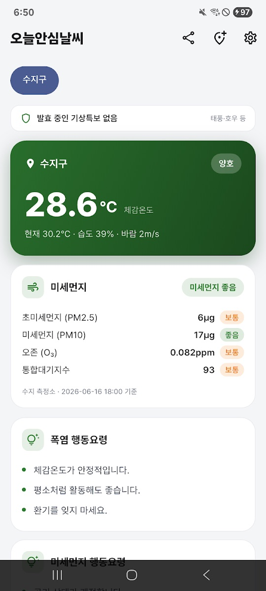
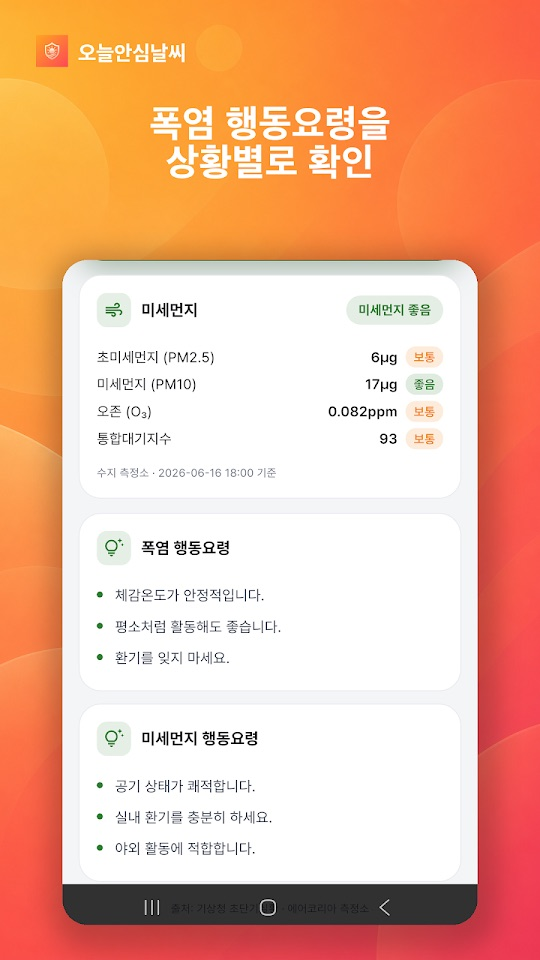
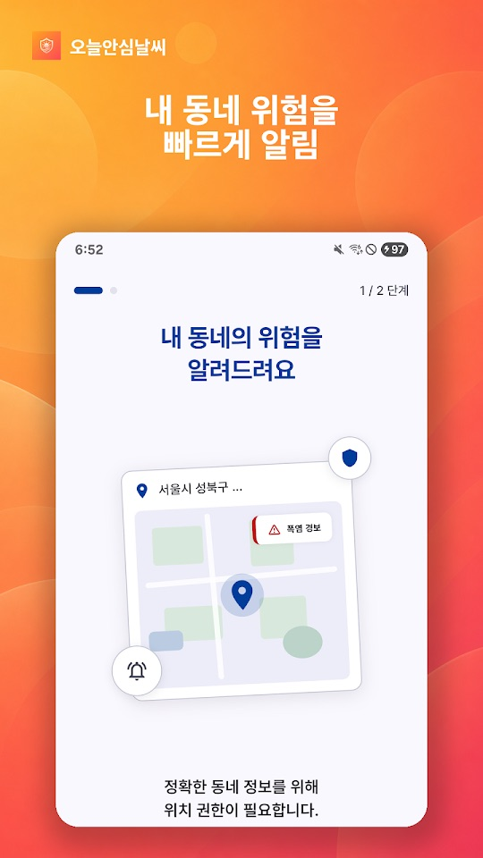
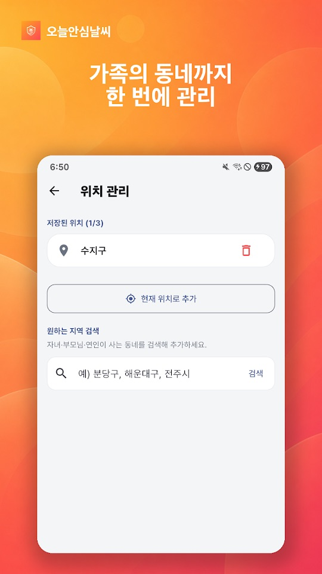

지금 있는 곳의 더위와 공기질을 한 화면에 보여 주는 생활 날씨 앱입니다. 복잡한 숫자 대신 평상·관심·주의·경고·위험 같은 단계와 색으로 알려 주고, 상황이 이전보다 나빠질 때 알림을 보냅니다.
무엇을 보여 주나요
- 폭염과 미세먼지 단계: 체감온도 기준 폭염 단계와 미세먼지 단계를 색으로 구분하고, 단계마다 바로 실천할 행동요령을 보여 줍니다.
- 나빠질 때만 알림: 날씨나 공기질 단계가 이전보다 나빠질 때만 알리며, 하루 종일 울리는 알림은 없다고 안내합니다.
- 내일 예보와 기상특보: 매일 저녁 내일 날씨와 미세먼지 예보를 알려 주고, 태풍·호우·폭우·강풍 특보가 발효되면 알립니다.
- 데이터 출처: 기상청 초단기실황과 에어코리아 측정소 실측값을 사용한다고 밝힙니다. 화면에는 측정소 이름과 기준 시각이 함께 나옵니다.
화면 구성과 지역 설정
- 메인 화면 위쪽에 지역 버튼과 발효 중인 기상특보 줄이 있고, 그 아래 체감온도 카드(현재 기온·습도·바람), 미세먼지 카드(초미세먼지 PM2.5·미세먼지 PM10·오존·통합대기지수), 폭염 행동요령, 미세먼지 행동요령이 이어집니다.
- 오른쪽 위 아이콘은 공유, 지역 추가, 설정입니다.
- 위치 관리에서 집·회사·부모님 댁 등 최대 세 곳을 저장하고, 탭 한 번으로 지역을 바꿉니다. 현재 위치로 추가하거나 지역 이름으로 검색할 수 있으며, Google Play 최근 업데이트는 시·군·구 단위 검색을 지원한다고 밝힙니다.
- 회원가입 없이 쓸 수 있고 위치 외의 개인정보를 모으지 않는다고 안내합니다. 위치 권한을 허용하지 않아도 기본 지역으로 이용할 수 있습니다.
처음 시작하기
- 아래 스토어 링크에서 설치합니다.
- 첫 안내 화면에서 위치 권한 요청을 봅니다. 동네 정보를 정확히 받으려면 허용하고, 원하지 않으면 거부한 뒤 기본 지역이나 직접 검색한 지역을 씁니다.
- 알림을 받으려면 알림 권한을 허용합니다.
- 메인 화면에서 체감온도와 미세먼지 단계, 행동요령을 확인합니다.
- 위치 관리에서 가족이 사는 동네 등 자주 보는 곳을 최대 세 곳까지 추가합니다.
활용할 때 참고할 점
아래는 스토어 설명과 화면 안내를 바탕으로 한 사용 제안입니다. 이 앱은 공식 재난 경보 수단이 아니며, 건강이나 안전을 보장하지 않습니다.
- 공식 경보와 함께 보세요. 특보 알림이 오더라도 재난문자와 기상청 발표를 우선하세요.
- 기준 시각과 측정소를 확인하세요. 미세먼지 값은 가까운 측정소 기준이라 내가 있는 자리와 다를 수 있습니다. 카드 아래의 측정소 이름과 기준 시각을 함께 보세요.
- 알림이 적다고 안전하다는 뜻은 아닙니다. 이 앱은 단계가 나빠질 때만 알리므로, 오래 밖에 있을 때는 직접 앱을 열어 현재 단계를 확인하세요.
- 가족의 동네를 저장해 두세요. 스토어 설명은 밖에서 일하는 사람, 어린 자녀나 연세 있는 부모님이 걱정되는 사람에게 권합니다. 몸 상태가 걱정되면 행동요령과 별개로 의료진과 상의하세요.
- 휴대폰 설정도 확인하세요. 알림 권한이 꺼져 있거나 절전 설정이 강하면 알림이 늦거나 오지 않을 수 있습니다.
스크린샷
Google Play 한국 스토어에 게시된 공식 스크린샷입니다(안드로이드 화면, 일부는 홍보 문구 포함). 화면 속 값은 2026년 6월 기준 예시이며 아이폰 화면은 다를 수 있습니다.




자주 묻는 질문
- 위치 권한을 꼭 허용해야 하나요?
- 아닙니다. 스토어 설명에 따르면 허용하지 않아도 기본 지역으로 쓸 수 있습니다. 위치 관리에서 지역을 검색해 추가할 수도 있습니다.
- 알림이 너무 자주 오지 않나요?
- 단계가 이전보다 나빠질 때만 알리고, 매일 저녁 내일 예보와 특보 발효 때 알린다고 안내합니다.
- 표시되는 미세먼지 값이 다른 앱과 달라요.
- 에어코리아 측정소 실측값과 측정 시각을 기준으로 하므로, 측정소나 갱신 시각이 다르면 값이 다를 수 있습니다.
- 아이폰과 안드로이드가 같은가요?
- 두 스토어의 설명은 같습니다. 확인한 버전은 App Store 1.0.2(2026년 7월 29일)이고, Google Play는 2026년 7월 22일 업데이트(지역 검색 개선)입니다. App Store는 한국 스토어에서 확인했습니다.
- 오류는 어떻게 알리나요?
- 지역과 시각이 보이는 화면 캡처를 ricecookey.help@gmail.com으로 보내 주세요.
스토어 링크
무료 앱
iOS 14.0 이상(App Store 기준). Google Play 표시: 광고 포함. App Store는 미국 스토어 조회에서 나오지 않았습니다.
문의
질문, 요청, 버그 제보: ricecookey.help@gmail.com
참고 자료와 확인 범위
- Google Play 페이지 — 2026년 7월 22일 업데이트, 설명·업데이트 내용·스크린샷
- App Store 페이지 — 버전 1.0.2(2026년 7월 29일 배포), 설명
기능과 메뉴 이름은 2026년 10월 20일에 확인한 스토어 설명과 공식 스크린샷 문구를 따랐습니다. 업데이트로 달라질 수 있으며, 앱 안의 표시가 이 페이지보다 우선합니다.
English
Today Safe Weather shows the heat and air quality where you are on one screen. Instead of raw numbers it uses levels and colors (normal, attention, caution, warning, danger) and notifies you when conditions get worse. The app and its data cover Korea and are in Korean.
What it shows
- Heat and fine-dust levels: heatwave level based on apparent temperature and fine-dust level, color-coded, with practical action guidance for each level.
- Alerts only when it gets worse: it notifies you only when the weather or air-quality level is worse than before, and says it avoids all-day alerts.
- Tomorrow's forecast and weather warnings: every evening it gives tomorrow's weather and fine-dust outlook, and notifies you when typhoon, heavy rain or strong wind warnings are issued.
- Data sources: the Korea Meteorological Administration's real-time observations and AirKorea station measurements. The screen shows the station name and measurement time.
Screens and locations
- The main screen has a location button and an active weather warnings line at the top, then an apparent-temperature card (current temperature, humidity, wind), a fine-dust card (PM2.5, PM10, ozone, overall air index), heat guidance and fine-dust guidance.
- The icons at the top right are share, add location and settings.
- In Location management (위치 관리) you can save up to three places such as home, work or your parents' home and switch with one tap. Add your current location or search by area name; the latest Google Play update mentions city/county/district search.
- It works without sign-up and says it collects no personal data other than location. Without location permission you can still use a default area.
Getting started
- Install from the store links below.
- The first screens ask for location permission. Allow it for accurate neighborhood data, or decline and use the default or a searched area.
- Allow notifications if you want alerts.
- Check the apparent temperature, fine-dust level and guidance on the main screen.
- Add up to three places you check often, such as where family members live, in Location management.
Notes for everyday use
These suggestions are based on the store descriptions and on-screen text. The app is not an official emergency alert service and does not guarantee health or safety.
- Use it alongside official alerts. Even when it notifies you of a warning, emergency text alerts and official KMA announcements come first.
- Check the time and station. Fine-dust values come from the nearest station and may differ from your exact spot. Read the station name and time under the card.
- Few alerts don't mean it's safe. The app alerts only when a level gets worse, so open it to check the current level when you are outside for long.
- Save your family's areas. The store description recommends it for outdoor workers and for people worried about young children or older parents. If you are concerned about someone's health, talk to a medical professional as well as following the guidance.
- Check your phone settings. If notifications are off or battery saving is aggressive, alerts may be late or missing.
Screenshots
Official screenshots from the Korean Google Play listing (Android screens, some with marketing captions in Korean). Values are examples from June 2026, and iPhone screens may differ.
FAQ
- Do I have to allow location access?
- No. According to the store description you can use a default area without it, and you can search for areas in Location management.
- Will it notify me all the time?
- It says it alerts only when a level gets worse, plus the evening outlook for tomorrow and when warnings are issued.
- The fine-dust value differs from another app.
- Values follow AirKorea station measurements and their timestamps, so a different station or update time can give a different value.
- Is iPhone the same as Android?
- Both store descriptions are the same. We checked App Store 1.0.2 (July 29, 2026) and a Google Play update of July 22, 2026 (improved area search). The App Store listing was checked in the Korean storefront.
- How do I report a problem?
- Send a screenshot showing the area and time to ricecookey.help@gmail.com.
Store links
Free app
Requires iOS 14.0 or later (App Store). Google Play shows: Contains ads. The App Store listing did not appear in a US storefront lookup.
Contact
Questions, requests and bug reports: ricecookey.help@gmail.com
References and scope
- Google Play listing — updated July 22, 2026; description, release notes and screenshots
- App Store listing — version 1.0.2 (released July 29, 2026), description
Features and menu names follow the store descriptions and official screenshot text checked on October 20, 2026. Updates may change them, and what the app shows takes precedence over this page.